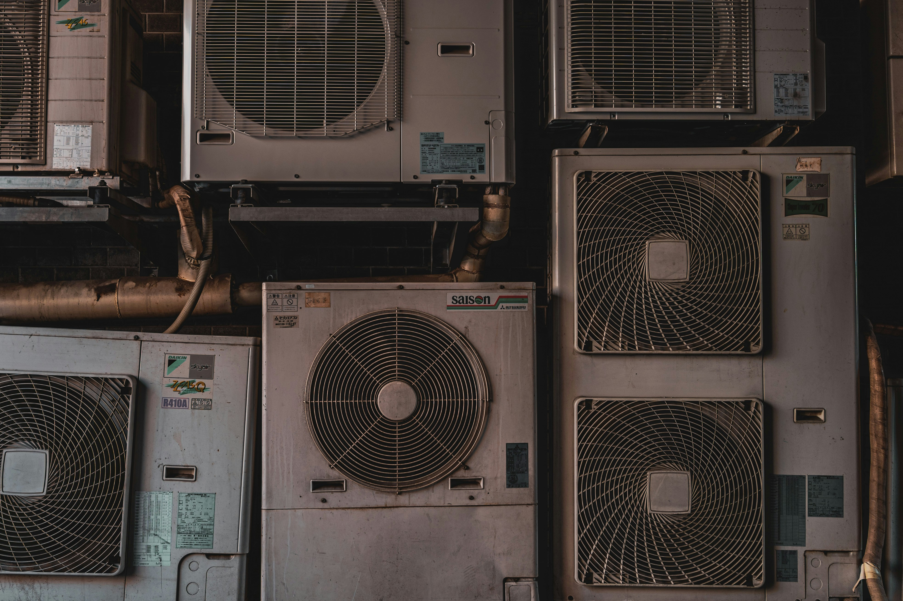
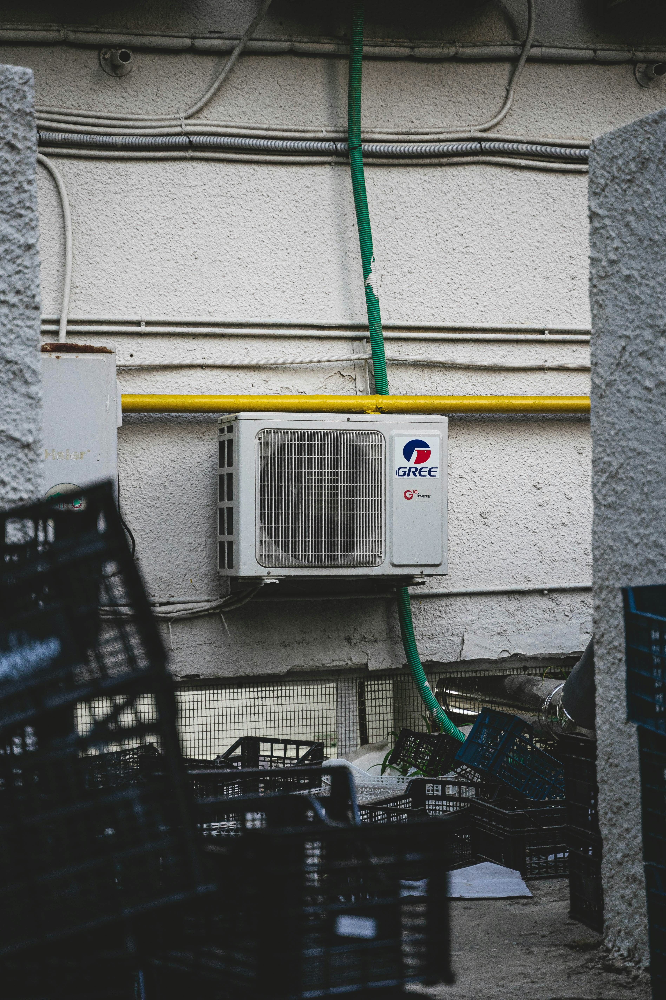

Eroarea DF la Aer Condiționat
Înțelege ce înseamnă simbolul DF și cum să rezolvi problema
Ce Înseamnă Când Apare DF la Aerul Condiționat?
Simbolul DF este o eroare comună care indică probleme cu sistemul de defrost
Ce Înseamnă DF?
DF = Defrost - Eroarea DF la aerul condiționat indică probleme cu sistemul de defrost/descongelare.
Semnificația:
- D = Defrost (Descongelare)
- F = Failure (Eșec)
Această eroare apare când unitatea nu poate să se descongeleze corect sau când există probleme cu senzorii de temperatură.
Când Apare DF?
Eroarea DF poate apărea în următoarele situații:
- Temperaturi foarte joase - sub 0°C
- Gheață pe evaporator - evaporatorul este înghețat
- Probleme cu drenajul - apa nu se drenează corect
- Defecte la senzori - senzorii de temperatură nu funcționează
Eroarea DF pe Diferite Mărci
Cum se manifestă și ce înseamnă pe fiecare marcă populară
Samsung
La aparatele Samsung, eroarea DF indică probleme cu sistemul de defrost.
Cauze comune:
- Senzor de temperatură defect
- Evaporator înghețat
- Probleme cu placa de control
Soluție: Verifică senzorii și resetează sistemul.
Bosch
La aparatele Bosch, DF poate indica probleme cu sistemul de descongelare.
Cauze comune:
- Probleme cu freonul
- Ventilator blocat
- Senzori defecte
Soluție: Verifică freonul și ventilatorul.
Ariston
La aparatele Ariston, eroarea DF este legată de sistemul de defrost.
Cauze comune:
- Probleme cu evaporatorul
- Senzor de temperatură defect
- Drenaj blocat
Soluție: Verifică evaporatorul și drenajul.
Romstal
La aparatele Romstal, DF indică probleme cu sistemul de descongelare.
Cauze comune:
- Gheață pe serpentine
- Probleme cu freonul
- Senzori defecte
Soluție: Verifică serpentinele și freonul.
Soluții pentru Eroarea DF
Pași pentru rezolvarea problemei și prevenirea apariției
Soluții Ușor de Implementat
Resetează Sistemul
Oprește unitatea și deconectează-o de la rețea timp de 5-10 minute.
Verifică Filtrele
Curăță filtrele pentru a îmbunătăți circulația aerului.
Verifică Drenajul
Asigură-te că conducta de drenaj nu este blocată.
Verifică Temperatura
Nu seta temperatura prea joasă (minim 18-20°C).
Soluții Care Necesită Tehnician
Probleme cu Freonul
Nivel scăzut sau scurgeri de freon necesită intervenția unui tehnician.
Senzori Defecte
Senzorii de temperatură defecte trebuie înlocuiți de un specialist.
Probleme cu Evaporatorul
Gheața excesivă pe evaporator poate indica probleme majore.
Placă de Control
Defecte la placa de control necesită reparații specializate.
Ghid Pas cu Pas - Rezolvarea Erorii DF
Urmărește acești pași pentru a rezolva problema
Pașii de Rezolvare
-
Oprește unitatea
Deconectează aerul condiționat de la rețea.
-
Așteaptă descongelarea
Lasă unitatea să se descongeleze natural (2-3 ore).
-
Curăță filtrele
Spală filtrele cu apă caldă și săpun.
-
Verifică drenajul
Asigură-te că conducta de drenaj nu este blocată.
-
Resetează sistemul
Pornește unitatea și verifică dacă eroarea persistă.
-
Contactează tehnicianul
Dacă problema persistă, contactează un specialist.
Instrumente Necesare
- Șurubelnițe - pentru deschiderea unității
- Perie moale - pentru curățarea filtrelor
- Apă caldă - pentru spălarea filtrelor
- Termometru - pentru verificarea temperaturii
- Lanternă - pentru vizibilitate bună
Cum Să Previi Eroarea DF
Măsuri preventive pentru a evita apariția problemei
Temperatură Optimă
Nu seta temperatura prea joasă (minim 18-20°C) pentru a evita ghețarea.
Mentenanță Regulată
Curăță filtrele la fiecare 2-4 săptămâni în sezonul cald.
Inspecție Vizuală
Verifică periodic evaporatorul pentru semne de gheață.
Servicii Profesionale
Programează o verificare anuală cu un tehnician specializat.
Întrebări Frecvente
Răspunsuri la cele mai comune întrebări despre eroarea DF
Galerie Foto - Eroarea DF
Vizualizează sistemele de defrost și componentele pentru prevenirea erorii DF

Sistem Defrost
Sistemul de defrost pentru prevenirea formării de gheață pe evaporator.
.jpg)
Componente HVAC
Componentele esențiale pentru funcționarea corectă a sistemului de defrost.

Instalație Profesională
Instalația profesională care minimizează riscurile de erori DF.
Ai Nevoie de Ajutor cu Eroarea DF?
Contactează-ne pentru asistență tehnică specializată
Contactează-ne Rapid
0765 289 421
info@erori-aer-conditionat.ro
Luni-Vineri: 8:00-18:00
Servicii de reparații și mentenanță
Specializat în erori DF și probleme de defrost